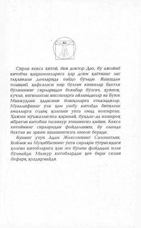

BBHayotda chinakam baxtga erishish va qiyinchiliklarni yengish sirlari haqida ibratli qo'llanma.
Ushbu kitob hayotiy qiyinchiliklarga duch kelgan insonlarga baxtga erishish yo'llarini o'rgatuvchi ibratli hikoyalar to'plamidir. Muallif donishmand qariya obrazidan foydalanib, o'quvchiga hayotni anglash, qiyinchiliklarni yengish va chinakam baxtiyorlikka erishish sirlarini ochib beradi.